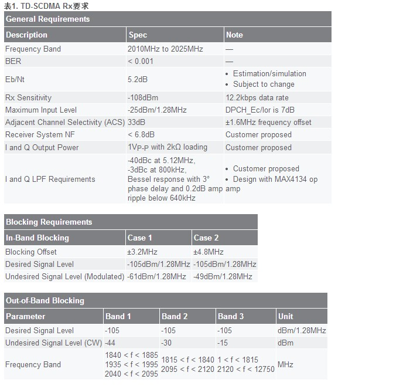

需要弄懂的概念
-
话务模型
-
话音业务：12.2kbit/s
-
数据业务：CS64bit/s, PS64kbit/s, PS128bit/s, PS384kbit/s
TD-SCDMA的载波配置
TD-SCDMA的载波配置
TD-SCDMA关键技术
TD-SCDMA关键技术
时分同步TDD的优劣
智能天线 联合检测 同步CDMA 功率控制 接力切换与硬切换软切换 动态信道分配（DCA技术） 多载波技术（N频点）
射频指标
射频指标
静态参考灵敏度电平 ， 动态范围 ，邻道选择性(ACS)，阻塞特性
基本技术指标一览
-
工作频段
-
A频段 2010～2025MHz
-
F频段 1880～1920MHz
-
E频段 2300～2400GHz
-
根据2002年10月原国家信息产业部下发文件《关于第三代公众移动通信系统频率规划问题的通知》（信部无[2002]479号）中规定： 将我国第三代公众移动通信系统主要工作频段规划为时分双工（TDD）方式， 即1880～1920MHz、2010～2025MHz；补充工作频率为时分双工（TDD）方式，2300～2400MHz。 第三代公众移动通信系统中TDD方式仅有我国的TD-SCDMA
-
码片速率：1.28Mchip/s；
-
载波带宽：1.6MHz；
-
基本帧长：5ms；每帧包含7个不同码型的突发脉冲同时传输。
-
多址方式：TDMA+FDMA+CDMA；
-
话音业务：8/12.2kbit/s；
-
数据业务
-
室内固定环境可达2Mbit/s;
-
慢速移动环境可达384kbit/s;
-
高速移动环境可达144kbit/s;
-
扩频因子：1，2，4，8，16
-
功率控制：闭环功率控制与开环功率控制；
-
调制方式：QPSK
-
切换方式：接力切换
对于TD-SCDMA 12.2kbps的参考测试信道而言，扩频系数等于8。
3GPP针对TD-SCDMA终端规定了很多技术指标，这些指标根据其制定的目的可以分作三大类:
-
一是为满足系统自身的需要而设定的指标，如发射机输出功率等级、功率控制精度、最小可控发射功率、发射信号调制精度EVM、接收机灵敏度、最大可接收信号幅度、频率稳准度等；
-
二是为反映系统鲁棒性而设定的指标，如接收机杂散响应指标、抗单音双音干扰指标、接收机邻道选择性指标ACS等；
-
三是为防止该系统对系统自身或其它系统造成干扰而设定的指标，如收发信机杂散辐射指标、发射机邻道功率泄漏ACLR、发射信号频域模板、发射机互调指标等。
参考：
TD-SCDMA手机射频前端设计_王险峰(Unread)

MelonLin © 2013 www.MelonLin.com(Not Built)